Pick a trip
Come along on the ice or see how Bryan sets up his gear.
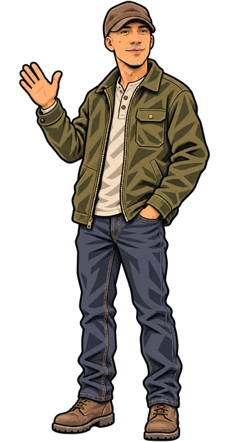
Tap a fishFirst fish
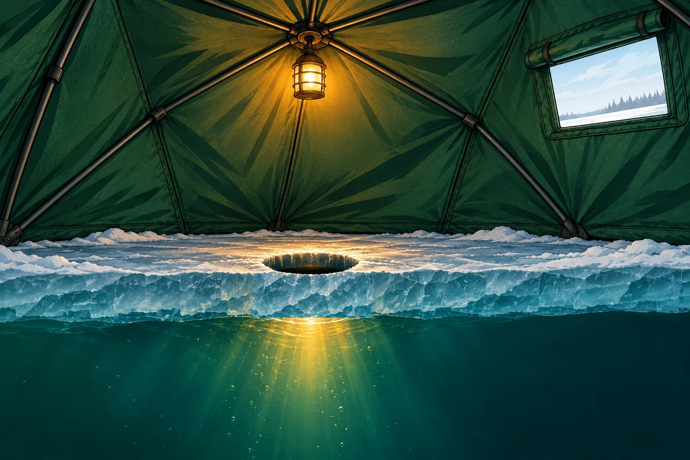
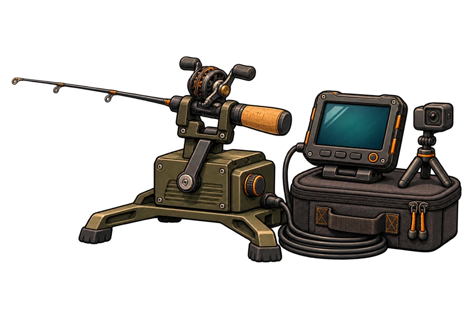
Come along for summer kayak trips, days on the ice, and a look at what happens below the surface. Sometimes Bryan’s kids join him, too.


Bryan fishes Minnesota year-round. He takes his kayak out for Mississippi River smallmouth in summer and films pike, walleye and perch under the ice.

Underwater strikes, ice-fishing trips, and gear setups.
Come along on the ice or see how Bryan sets up his gear.

Short picture guides from the ice.

Follow Bryan on a scouting trip as he brings an underwater camera out on early ice in Minnesota.
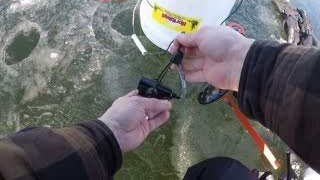
Get the camera ready Continue on YouTube at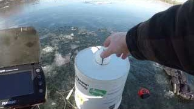
Feed out the cable Continue on YouTube at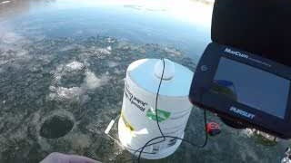
Check the monitor Continue on YouTube at
When you jig, you lift and lower your rod tip to make the lure hop under the ice. That motion helps draw fish in.
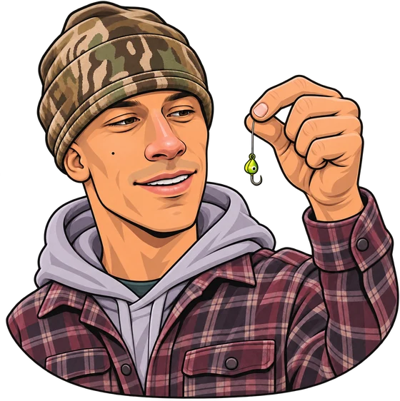
Start near the bottom. Lower a small jig or jigging spoon through the hole. When the line goes slack, you’ve reached bottom. Reel up a little so the lure hangs above it.
Try a couple of lifts and drops, then pause to give a fish a chance to bite. Watch your rod tip and line for a tap or sudden slack. If nothing bites, try smaller lifts, a longer pause or fishing a little higher.
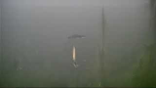
Watch a jigging spoon in action at 7:15 ↗See the Minnesota DNR’s ice fishing guide for perch for more on jigging.
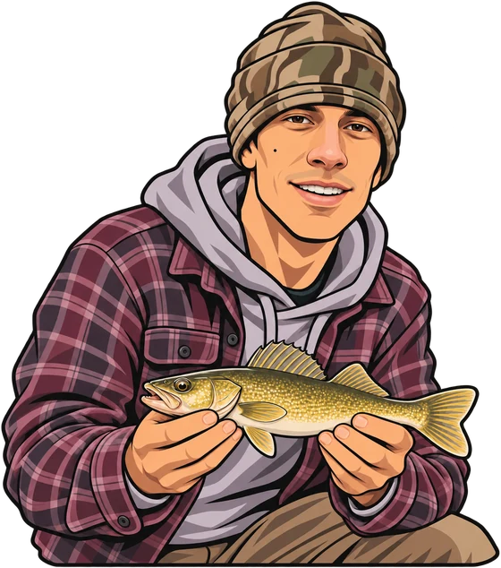
Start with the tail on one and the bars on the other.
See the Minnesota DNR guides to walleye and yellow perch.


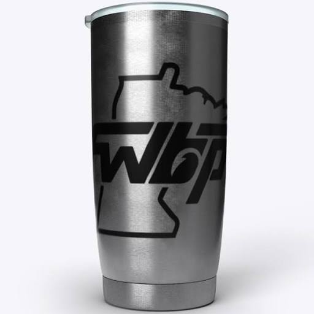
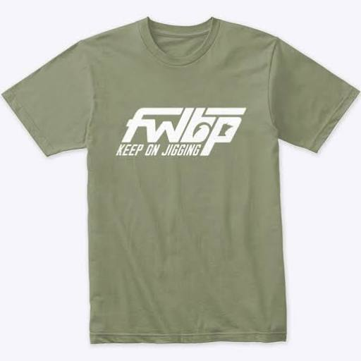